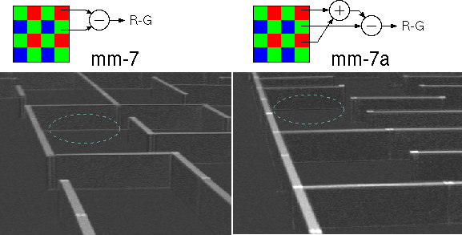

mm-7a
mm-7a 概要
mm-7a のハード ウェアは2012年の mm-7 とほぼ同一です。→ mm-7概要を参照してください。
mm-7a で行った FPGA 内の回路とソフトウェアの改良点について以下に述べます。
- 色差画像生成アルゴリズム
mm-7では赤の色差画像を隣接するRとG画素の差で作っていました。RとG画素の境に白黒のエッジがかかると、赤成分が無いにも関わらずR-Gに値が生じます。
mm-7aではG画素上下に隣接するR画素の平均とG画素との差を取るようにしました。両者の画像を比べると、壁と床の境の水平エッジ部に差があります。
mm-7の処理ははしょり過ぎでした。
また、2012年大会からゴールの周囲の壁上面は、黄色となりました。ルール変更が2012年大会直前だったこともあり、mm-7 走行時には黄色の壁を赤に変えてもらっての走行でした。
今年は赤色の他に黄色も判定する様に変更しています。黄色は青の補色ですから青の色差画像(B-G)で負の値を取ります。B-G 画像の負の部分が閾値を下回る画素を符号反転して赤の色差画像に加えることで黄色と赤色の壁を同一の処理で判定するようにしました。
- 壁判定アルゴリズム
mm-7の壁情報検出アルゴリズムの最終段階で、以下のような判定を行っていました。
・確定した交点座標の周辺の画像から壁の有無を検出する。
・交点座標を中心に、右図のように９つの領域を設定し、各領域内の色差画像の画素平均値、ピークを計算する。床面(B)のレベルを基準にしてN,E,W,S各領域の画素平均値を比較し、壁の有無を判断する。
mm-7では、画素平均値を比較する閾値を N,S,W,E で同一の閾値を用いていました。また、閾値は平均値のうち最大値に比例した値にしてコントラストの変化に対応していました。そのため例えば NとEに壁があるが、それぞれの平均値が大きく異なったようなパターンではコントラストの強い方に引っ張られて閾値が上がり、弱い方が壁なしと判定されることがありました。壁の縦方向と横方向でコントラストが異なる部分があるためです。
そこで mm-7a では、閾値の決定は NとS,WとE それぞれの平均値にしたがって決定し、壁が無いときに閾値が低くなりすぎるのは、NとS、WとE それぞれで決定した閾値を比較することで判断するようにしました。